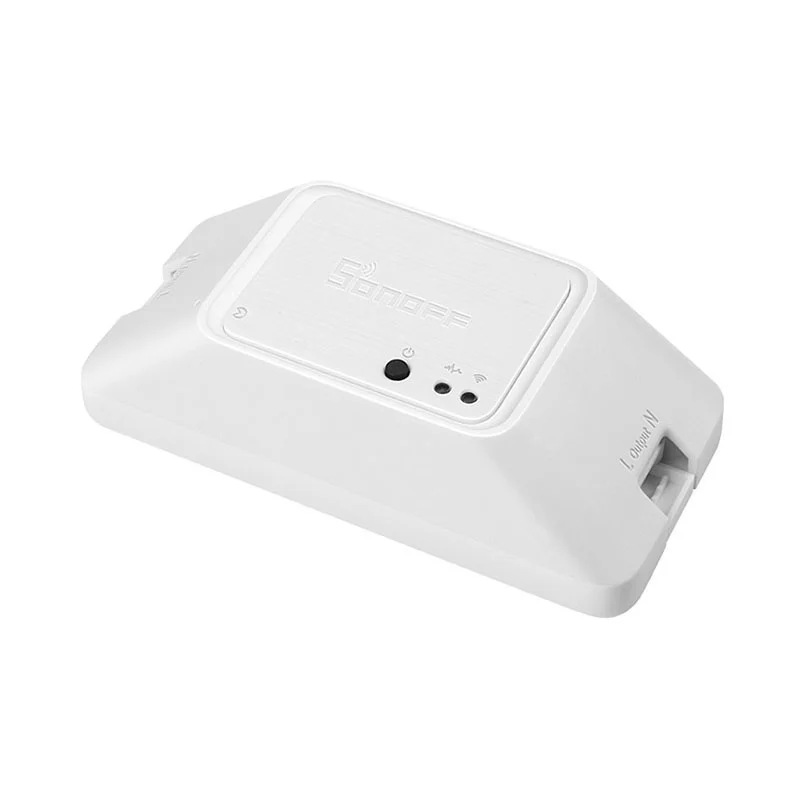

Sonoff Basic R3
ITEAD’s in-line Wi-Fi switch — the device that taught a generation about ESP8266-family hardware. The R3 revision uses the ESP8285 (flash built into the chip), keeps the famous flash-mode button, and even ships a documented DIY mode.

FCC ID
FCC ID: 2APN5BASICR3 (Grantee: 2APN5 = ITEAD / Sonoff). The finished device is certified under its own grant.
What the FCC filing revealed
The filing exists: FCC ID 2APN5BASICR3, granted to ITEAD, holds the usual public record for this device — external and internal photos, RF test reports, and the filed user manual.
Why the device needed its own grant: the Basic R3 does not contain a pre-certified radio module. Its ESP8285 is a bare SoC soldered directly to the board, so there was no module certification for ITEAD to inherit — the finished product was certified as a whole, under ITEAD’s own grantee code. (Contrast devices built around Espressif’s WROOM modules, which do carry Espressif’s own grants, 2AC7Z.)
What we reveal
The FCC tells you what a device emits. We tell you what’s inside and how it works.
- Chip-level identification — every major IC named, with datasheet links where public documentation exists
- Board mapping — what connects to what, which test pads matter, where the debug interfaces hide
- What the manufacturer won’t tell you — undocumented features, hidden radios, silent telemetry, repair blockers
Key Chips
- Espressif ESP8285 — the Wi-Fi SoC with 1 MB of flash integrated into the package — no external flash chip needed, unlike the original ESP8266.
- Relay + power supply — mains switching and AC-to-DC conversion on the same compact PCB.
Teardown Notes
- The R3 opens with screws — no glue — revealing a single PCB with clearly separated mains and low-voltage sections.
- A four-pin serial header footprint is on the board (3.3 V, TX, RX, GND); the case button is wired to GPIO0, which doubles as the flash-mode select.
- GPIO assignments are community-documented: GPIO0 = button, GPIO12 = relay, GPIO13 = LED.
Simple Entry Points
Flash mode with one button and one cable
You need: A 3.3 V USB-to-serial adapter (about $3) and four Dupont wires. Mains-voltage warning: disconnect from wall power; power the board only from the 3.3 V adapter during this procedure.
- Wire the adapter to the serial header: 3.3 V to 3.3 V, GND to GND, TX to RX, RX to TX. The 3.3 V wire is what powers the board during flashing — without it the chip never comes up. Do not connect the adapter’s 5 V line anywhere.
- Press and hold the case button (GPIO0 low), then apply 3.3 V power. Release the button — the ESP8285 is now in UART download mode.
- Back up the original firmware first, then write your replacement firmware with esptool.
$ esptool.py --port /dev/ttyUSB0 read_flash 0x00000 0x100000 backup.bin
esptool.py v4.0
Detected ESP8285 — 1 MB flash
1048576 bytes read successfully
$ esptool.py --port /dev/ttyUSB0 write_flash 0x00000 tasmota.bin
Writing at 0x00000000... 100%
Leaving... Hard resetting via RTS pin...The R3 also offers a manufacturer-documented DIY mode (local REST API over Wi-Fi) for users who prefer not to open the case at all.
The Full Record
Everything in this timeline is documented — a court outcome, a regulator’s action, a published security analysis, or ITEAD’s own statements — and each entry links its source. Where a popular claim about the Basic R3 is not proven, it is labeled Unverified at the end, with the evidence on both sides.
| Year | What happened | Source |
|---|---|---|
| 2021 | Pairing sent the home Wi-Fi password in plain text (Sonoff S26 tested; the Basic line shared the app and the guide). In May 2021, A&O IT Group published its test of the Sonoff S26, a sibling plug on the same eWeLink system: during pairing, the app sent the home Wi-Fi network name and password to the device over unencrypted HTTP, where an attacker in radio range could capture them, along with the device’s ID and API key. The researchers also quoted the Sonoff Basic/RF user guide for the pairing access point’s default password — 12345678, printed in the manual and not changeable by the user — and said ITEAD had not responded to their disclosure by the time they published. The Basic R3 was not the unit on their bench; it pairs through the same eWeLink flow. | A&O IT Group — smart plug security research, May 2021 |
| 2022 | eWeLink cloud downtime, January 2022. For about two days in mid-January 2022, Sonoff users reported the eWeLink cloud unreachable — devices patchy or offline in the app and in cloud-linked integrations — while local-network control kept working for those who had it set up. There was no public status page to check; users traded reports in the Home Assistant forum and pointed to eWeLink’s Twitter account for news. That is this device’s cloud dependency in one episode: the switch on the wall still worked, the remote control did not. | Home Assistant community — eWeLink cloud downtime reports, January 2022 |
| 2023 | eWeLink retired the v1 cloud interface that community tools relied on (platform-level). In September 2023, after waves of “all disconnected” failures in the popular SonoffLAN Home Assistant integration, eWeLink support told a user that the project’s traffic had been observed, that it still used the v1 interface, that v1 was no longer under maintenance, and that eWeLink was gradually discontinuing it until it would be entirely inaccessible. Nothing about the Basic R3 hardware had changed — the cloud contract underneath community integrations had. | Home Assistant community — Sonoff all disconnected, September 2023 |
| 2024 | CVE-2024-7205: a person you shared a device with could take it over (eWeLink cloud, platform-level — not Basic R3 firmware). eWeLink’s own security advisory list records the flaw in the eWeLink Cloud Service homepage module before version 2.19.0, published July 30, 2024: when a device was shared, sharing exposed unnecessary device-sensitive information that let a secondary user take over the device as if they were the primary user. A stock Basic R3 lives on eWeLink’s cloud, so a cloud account flaw is part of this device’s real record even though the bug was not in the switch itself. | eWeLink — security advisories & notices |
The empty part of the record, stated plainly: No CPSC recall, no lawsuit, and no CVE naming the Sonoff Basic R3 itself was found in the public record as of November 2026. ITEAD’s documented record for this device is the pairing and cloud record above — thin, and stated as thin, rather than padded. No Unverified aside is included on this page, because no widely believed claim about the Basic R3 itself met the bar of a documented allegation with evidence on both sides.
Did you know
- DIY mode speaks plain HTTP on purpose. ITEAD’s DIY protocol document says the Basic R3 announces itself on your network using mDNS and takes control commands as HTTP POST requests — and recommends HTTP instead of HTTPS because of the LAN’s security and the device’s limited computing power. Local control and weak local encryption are the same design choice, seen from two sides. Source: SONOFF DIY Mode API Protocol v2.0 (PDF, ITEAD, March 2020).
- The whole R3 family shares one 10 A relay board. A teardown of the R3 range found the same relay board — built around a GI-1A-5DH relay rated at 10 A — under the Wi-Fi, RF, and Zigbee variants, with components simply left off the versions that do not need them. One mains board, several radios. Source: NotEnoughTech — Sonoff Basic R3 teardown.
- DIY mode 2.0 deleted the jumper. The first DIY mode made you open the case and bridge a jumper to reconfigure the switch. DIY mode 2.0, on firmware 3.5.0 and later, needs only a long press of the pairing button to enter Compatible Pairing Mode — no disassembly at all. Source: SONOFF — DIY mode 2.0 announcement.
- You can flash Tasmota through DIY mode itself, with no cable. DIY mode’s over-the-air update function accepts a firmware file you point it at, and community guides use exactly that door to install Tasmota on a Basic R3 — the manufacturer’s own escape hatch from the cloud doubles as the community firmware’s front door. The guides warn the trip is one-way: there is no documented path back to stock ITEAD firmware. Source: Flashing Tasmota onto Sonoff devices over-the-air — guide.
- The manual covers a radio this model does not have. The combined BASICR3/BASICRFR3 manual lists a 433.92 MHz RF receiver in its specifications — then notes that the BASICR3 does not support the 433.92 MHz remote controller. That feature belongs to the RFR3 sibling; the plain R3’s only radio is 2.4 GHz Wi-Fi. Source: Sonoff BASICR3/BASICRFR3 user manual.
Further Reading
- Sonoff Basic Wi-Fi Smart Switch — Untangling the Ropes — EDN
- Sonoff Basic — Tasmota device documentation
“The only sin is to make a choice without knowing you are making one.”
— Jonathan Shewchuk